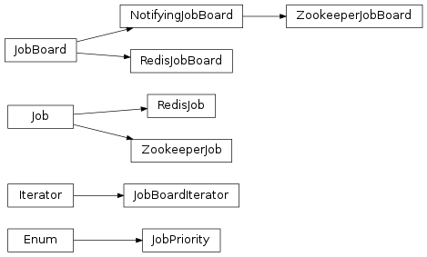

Jobs¶
Overview¶
Jobs and jobboards are a novel concept that TaskFlow provides to allow for automatic ownership transfer of workflows between capable owners (those owners usually then use engines to complete the workflow). They provide the necessary semantics to be able to atomically transfer a job from a producer to a consumer in a reliable and fault tolerant manner. They are modeled off the concept used to post and acquire work in the physical world (typically a job listing in a newspaper or online website serves a similar role).
TLDR: It’s similar to a queue, but consumers lock items on the queue when claiming them, and only remove them from the queue when they’re done with the work. If the consumer fails, the lock is automatically released and the item is back on the queue for further consumption.
Note
For more information, please visit the paradigm shift page for more details.
Definitions¶
- Jobs
- A
jobconsists of a unique identifier, name, and a reference to alogbookwhich contains the details of the work that has been or should be/will be completed to finish the work that has been created for that job. - Jobboards
- A
jobboardis responsible for managing the posting, ownership, and delivery of jobs. It acts as the location where jobs can be posted, claimed and searched for; typically by iteration or notification. Jobboards may be backed by different capable implementations (each with potentially differing configuration) but all jobboards implement the same interface and semantics so that the backend usage is as transparent as possible. This allows deployers or developers of a service that uses TaskFlow to select a jobboard implementation that fits their setup (and their intended usage) best.
High level architecture¶
{kind=link}
Note: This diagram shows the high-level diagram (and further parts of this documentation also refer to it as well) of the zookeeper implementation (other implementations will typically have different architectures).
Features¶
- High availability
- Guarantees workflow forward progress by transferring partially complete work or work that has not been started to entities which can either resume the previously partially completed work or begin initial work to ensure that the workflow as a whole progresses (where progressing implies transitioning through the workflow patterns and atoms and completing their associated states transitions).
- Atomic transfer and single ownership
- Ensures that only one workflow is managed (aka owned) by a single owner at a time in an atomic manner (including when the workflow is transferred to a owner that is resuming some other failed owners work). This avoids contention and ensures a workflow is managed by one and only one entity at a time.
- Note: this does not mean that the owner needs to run the workflow itself but instead said owner could use an engine that runs the work in a distributed manner to ensure that the workflow progresses.
- Separation of workflow construction and execution
- Jobs can be created with logbooks that contain a specification of the work to be done by a entity (such as an API server). The job then can be completed by a entity that is watching that jobboard (not necessarily the API server itself). This creates a disconnection between work formation and work completion that is useful for scaling out horizontally.
- Asynchronous completion
- When for example a API server posts a job for completion to a jobboard that API server can return a tracking identifier to the user calling the API service. This tracking identifier can be used by the user to poll for status (similar in concept to a shipping tracking identifier created by fedex or UPS).
Usage¶
All jobboards are mere classes that implement same interface, and of course
it is possible to import them and create instances of them just like with any
other class in Python. But the easier (and recommended) way for creating
jobboards is by using the fetch()
function which uses entrypoints (internally using stevedore) to fetch and
configure your backend.
Using this function the typical creation of a jobboard (and an example posting of a job) might look like:
from taskflow.persistence import backends as persistence_backends
from taskflow.jobs import backends as job_backends
...
persistence = persistence_backends.fetch({
"connection': "mysql",
"user": ...,
"password": ...,
})
book = make_and_save_logbook(persistence)
board = job_backends.fetch('my-board', {
"board": "zookeeper",
}, persistence=persistence)
job = board.post("my-first-job", book)
...
Consumption of jobs is similarly achieved by creating a jobboard and using the iteration functionality to find and claim jobs (and eventually consume them). The typical usage of a jobboard for consumption (and work completion) might look like:
import time
from taskflow import exceptions as exc
from taskflow.persistence import backends as persistence_backends
from taskflow.jobs import backends as job_backends
...
my_name = 'worker-1'
coffee_break_time = 60
persistence = persistence_backends.fetch({
"connection': "mysql",
"user": ...,
"password": ...,
})
board = job_backends.fetch('my-board', {
"board": "zookeeper",
}, persistence=persistence)
while True:
my_job = None
for job in board.iterjobs(only_unclaimed=True):
try:
board.claim(job, my_name)
except exc.UnclaimableJob:
pass
else:
my_job = job
break
if my_job is not None:
try:
perform_job(my_job)
except Exception:
LOG.exception("I failed performing job: %s", my_job)
board.abandon(my_job, my_name)
else:
# I finished it, now cleanup.
board.consume(my_job)
persistence.get_connection().destroy_logbook(my_job.book.uuid)
time.sleep(coffee_break_time)
...
There are a few ways to provide arguments to the flow. The first option is to
add a store to the flowdetail object in the
logbook.
You can also provide a store in the
job itself when posting it to the
job board. If both store values are found, they will be combined,
with the job store
overriding the logbook
store.
from oslo_utils import uuidutils
from taskflow import engines
from taskflow.persistence import backends as persistence_backends
from taskflow.persistence import models
from taskflow.jobs import backends as job_backends
...
persistence = persistence_backends.fetch({
"connection': "mysql",
"user": ...,
"password": ...,
})
board = job_backends.fetch('my-board', {
"board": "zookeeper",
}, persistence=persistence)
book = models.LogBook('my-book', uuidutils.generate_uuid())
flow_detail = models.FlowDetail('my-job', uuidutils.generate_uuid())
book.add(flow_detail)
connection = persistence.get_connection()
connection.save_logbook(book)
flow_detail.meta['store'] = {'a': 1, 'c': 3}
job_details = {
"flow_uuid": flow_detail.uuid,
"store": {'a': 2, 'b': 1}
}
engines.save_factory_details(flow_detail, flow_factory,
factory_args=[],
factory_kwargs={},
backend=persistence)
jobboard = get_jobboard(zk_client)
jobboard.connect()
job = jobboard.post('my-job', book=book, details=job_details)
# the flow global parameters are now the combined store values
# {'a': 2, 'b': 1', 'c': 3}
...
Types¶
Zookeeper¶
Board type: 'zookeeper'
Uses zookeeper to provide the jobboard capabilities and semantics by using a zookeeper directory, ephemeral, non-ephemeral nodes and watches.
Additional kwarg parameters:
client: a class that provideskazoo.client.KazooClient-like interface; it will be used for zookeeper interactions, sharing clients between jobboard instances will likely provide better scalability and can help avoid creating to many open connections to a set of zookeeper servers.persistence: a class that provides a persistence backend interface; it will be used for loading jobs logbooks for usage at runtime or for usage before a job is claimed for introspection.
Additional configuration parameters:
path: the root zookeeper path to store job information (defaults to/taskflow/jobs)hosts: the list of zookeeper hosts to connect to (defaults tolocalhost:2181); only used if a client is not provided.timeout: the timeout used when performing operations with zookeeper; only used if a client is not provided.handler: a class that provideskazoo.handlers-like interface; it will be used internally by kazoo to perform asynchronous operations, useful when your program uses eventlet and you want to instruct kazoo to use an eventlet compatible handler.
Note
See ZookeeperJobBoard
for implementation details.
Redis¶
Board type: 'redis'
Uses redis to provide the jobboard capabilities and semantics by using a redis hash data structure and individual job ownership keys (that can optionally expire after a given amount of time).
Note
See RedisJobBoard
for implementation details.
Considerations¶
Some usage considerations should be used when using a jobboard to make sure it’s used in a safe and reliable manner. Eventually we hope to make these non-issues but for now they are worth mentioning.
Dual-engine jobs¶
What: Since atoms and engines are not currently preemptable we can not
force an engine (or the threads/remote workers... it is using to run) to stop
working on an atom (it is general bad behavior to force code to stop without
its consent anyway) if it has already started working on an atom (short of
doing a kill -9 on the running interpreter). This could cause problems
since the points an engine can notice that it no longer owns a claim is at any
state change that occurs (transitioning to a new atom or
recording a result for example), where upon noticing the claim has been lost
the engine can immediately stop doing further work. The effect that this causes
is that when a claim is lost another engine can immediately attempt to acquire
the claim that was previously lost and it could begin working on the
unfinished tasks that the later engine may also still be executing (since that
engine is not yet aware that it has lost the claim).
TLDR: not preemptable, possible to become aware of losing a claim after the fact (at the next state change), another engine could have acquired the claim by then, therefore both would be working on a job.
Alleviate by:
- Ensure your atoms are idempotent, this will cause an engine that may be executing the same atom to be able to continue executing without causing any conflicts/problems (idempotency guarantees this).
- On claiming jobs that have been claimed previously enforce a policy that
happens before the jobs workflow begins to execute (possibly prior to an
engine beginning the jobs work) that ensures that any prior work has been
rolled back before continuing rolling forward. For example:
- Rolling back the last atom/set of atoms that finished.
- Rolling back the last state change that occurred.
- Delay claiming partially completed work by adding a wait period (to allow the previous engine to coalesce) before working on a partially completed job (combine this with the prior suggestions and most dual-engine issues should be avoided).
Interfaces¶
-
class
taskflow.jobs.base.JobPriority[source]¶ Bases:
enum.EnumEnum of job priorities (modeled after hadoop job priorities).
-
VERY_HIGH= <JobPriority.VERY_HIGH: 'VERY_HIGH'>¶ Extremely urgent job priority.
-
HIGH= <JobPriority.HIGH: 'HIGH'>¶ Mildly urgent job priority.
-
NORMAL= <JobPriority.NORMAL: 'NORMAL'>¶ Default job priority.
-
LOW= <JobPriority.LOW: 'LOW'>¶ Not needed anytime soon job priority.
-
VERY_LOW= <JobPriority.VERY_LOW: 'VERY_LOW'>¶ Very much not needed anytime soon job priority.
-
-
class
taskflow.jobs.base.Job(board, name, uuid=None, details=None, backend=None, book=None, book_data=None)[source]¶ Bases:
objectA abstraction that represents a named and trackable unit of work.
A job connects a logbook, a owner, a priority, last modified and created on dates and any associated state that the job has. Since it is a connected to a logbook, which are each associated with a set of factories that can create set of flows, it is the current top-level container for a piece of work that can be owned by an entity (typically that entity will read those logbooks and run any contained flows).
Only one entity will be allowed to own and operate on the flows contained in a job at a given time (for the foreseeable future).
NOTE(harlowja): It is the object that will be transferred to another entity on failure so that the contained flows ownership can be transferred to the secondary entity/owner for resumption, continuation, reverting...
-
last_modified¶ The datetime the job was last modified.
-
created_on¶ The datetime the job was created on.
-
board¶ The board this job was posted on or was created from.
-
state¶ Access the current state of this job.
-
priority¶ The
JobPriorityof this job.
-
wait(timeout=None, delay=0.01, delay_multiplier=2.0, max_delay=60.0, sleep_func=<built-in function sleep>)[source]¶ Wait for job to enter completion state.
If the job has not completed in the given timeout, then return false, otherwise return true (a job failure exception may also be raised if the job information can not be read, for whatever reason). Periodic state checks will happen every
delayseconds wheredelaywill be multiplied by the given multipler after a state is found that is not complete.Note that if no timeout is given this is equivalent to blocking until the job has completed. Also note that if a jobboard backend can optimize this method then its implementation may not use delays (and backoffs) at all. In general though no matter what optimizations are applied implementations must always respect the given timeout value.
-
book¶ Logbook associated with this job.
If no logbook is associated with this job, this property is None.
-
book_uuid¶ UUID of logbook associated with this job.
If no logbook is associated with this job, this property is None.
-
book_name¶ Name of logbook associated with this job.
If no logbook is associated with this job, this property is None.
-
uuid¶ The uuid of this job.
-
details¶ A dictionary of any details associated with this job.
-
name¶ The non-uniquely identifying name of this job.
-
-
class
taskflow.jobs.base.JobBoardIterator(board, logger, board_fetch_func=None, board_removal_func=None, only_unclaimed=False, ensure_fresh=False)[source]¶ Bases:
six.IteratorIterator over a jobboard that iterates over potential jobs.
It provides the following attributes:
only_unclaimed: boolean that indicates whether to only iterate over unclaimed jobsensure_fresh: boolean that requests that during every fetch of a new set of jobs this will cause the iterator to force the backend to refresh (ensuring that the jobboard has the most recent job listings)board: the board this iterator was created from
-
board¶ The board this iterator was created from.
-
class
taskflow.jobs.base.JobBoard(name, conf)[source]¶ Bases:
objectA place where jobs can be posted, reposted, claimed and transferred.
There can be multiple implementations of this job board, depending on the desired semantics and capabilities of the underlying jobboard implementation.
NOTE(harlowja): the name is meant to be an analogous to a board/posting system that is used in newspapers, or elsewhere to solicit jobs that people can interview and apply for (and then work on & complete).
-
iterjobs(only_unclaimed=False, ensure_fresh=False)[source]¶ Returns an iterator of jobs that are currently on this board.
NOTE(harlowja): the ordering of this iteration should be by posting order (oldest to newest) with higher priority jobs being provided before lower priority jobs, but it is left up to the backing implementation to provide the order that best suits it..
NOTE(harlowja): the iterator that is returned may support other attributes which can be used to further customize how iteration can be accomplished; check with the backends iterator object to determine what other attributes are supported.
Parameters: - only_unclaimed – boolean that indicates whether to only iteration over unclaimed jobs.
- ensure_fresh – boolean that requests to only iterate over the most recent jobs available, where the definition of what is recent is backend specific. It is allowable that a backend may ignore this value if the backends internal semantics/capabilities can not support this argument.
-
wait(timeout=None)[source]¶ Waits a given amount of time for any jobs to be posted.
When jobs are found then an iterator will be returned that can be used to iterate over those jobs.
NOTE(harlowja): since a jobboard can be mutated on by multiple external entities at the same time the iterator that can be returned may still be empty due to other entities removing those jobs after the iterator has been created (be aware of this when using it).
Parameters: timeout – float that indicates how long to wait for a job to appear (if None then waits forever).
-
job_count¶ Returns how many jobs are on this jobboard.
NOTE(harlowja): this count may change as jobs appear or are removed so the accuracy of this count should not be used in a way that requires it to be exact & absolute.
-
name¶ The non-uniquely identifying name of this jobboard.
-
consume(job, who)[source]¶ Permanently (and atomically) removes a job from the jobboard.
Consumption signals to the board (and any others examining the board) that this job has been completed by the entity that previously claimed that job.
Only the entity that has claimed that job is able to consume the job.
A job that has been consumed can not be reclaimed or reposted by another entity (job postings are immutable). Any entity consuming a unclaimed job (or a job they do not have a claim on) will cause an exception.
Parameters: - job – a job on this jobboard that can be consumed (if it does not exist then a NotFound exception will be raised).
- who – string that names the entity performing the consumption, this must be the same name that was used for claiming this job.
-
post(name, book=None, details=None, priority=<JobPriority.NORMAL: 'NORMAL'>)[source]¶ Atomically creates and posts a job to the jobboard.
This posting allowing others to attempt to claim that job (and subsequently work on that job). The contents of the provided logbook, details dictionary, or name (or a mix of these) must provide enough information for consumers to reference to construct and perform that jobs contained work (whatever it may be).
Once a job has been posted it can only be removed by consuming that job (after that job is claimed). Any entity can post/propose jobs to the jobboard (in the future this may be restricted).
Returns a job object representing the information that was posted.
-
claim(job, who)[source]¶ Atomically attempts to claim the provided job.
If a job is claimed it is expected that the entity that claims that job will at sometime in the future work on that jobs contents and either fail at completing them (resulting in a reposting) or consume that job from the jobboard (signaling its completion). If claiming fails then a corresponding exception will be raised to signal this to the claim attempter.
Parameters: - job – a job on this jobboard that can be claimed (if it does not exist then a NotFound exception will be raised).
- who – string that names the claiming entity.
-
abandon(job, who)[source]¶ Atomically attempts to abandon the provided job.
This abandonment signals to others that the job may now be reclaimed. This would typically occur if the entity that has claimed the job has failed or is unable to complete the job or jobs it had previously claimed.
Only the entity that has claimed that job can abandon a job. Any entity abandoning a unclaimed job (or a job they do not own) will cause an exception.
Parameters: - job – a job on this jobboard that can be abandoned (if it does not exist then a NotFound exception will be raised).
- who – string that names the entity performing the abandoning, this must be the same name that was used for claiming this job.
-
trash(job, who)[source]¶ Trash the provided job.
Trashing a job signals to others that the job is broken and should not be reclaimed. This is provided as an option for users to be able to remove jobs from the board externally. The trashed job details should be kept around in an alternate location to be reviewed, if desired.
Only the entity that has claimed that job can trash a job. Any entity trashing a unclaimed job (or a job they do not own) will cause an exception.
Parameters: - job – a job on this jobboard that can be trashed (if it does not exist then a NotFound exception will be raised).
- who – string that names the entity performing the trashing, this must be the same name that was used for claiming this job.
-
register_entity(entity)[source]¶ Register an entity to the jobboard(‘s backend), e.g: a conductor.
Parameters: entity ( Entity) – entity to register as being associated with the jobboard(‘s backend)
-
connected¶ Returns if this jobboard is connected.
-
-
class
taskflow.jobs.base.NotifyingJobBoard(name, conf)[source]¶ Bases:
taskflow.jobs.base.JobBoardA jobboard subclass that can notify others about board events.
Implementers are expected to notify at least about jobs being posted and removed.
NOTE(harlowja): notifications that are emitted may be emitted on a separate dedicated thread when they occur, so ensure that all callbacks registered are thread safe (and block for as little time as possible).
-
taskflow.jobs.backends.fetch(name, conf, namespace='taskflow.jobboards', **kwargs)[source]¶ Fetch a jobboard backend with the given configuration.
This fetch method will look for the entrypoint name in the entrypoint namespace, and then attempt to instantiate that entrypoint using the provided name, configuration and any board specific kwargs.
NOTE(harlowja): to aid in making it easy to specify configuration and options to a board the configuration (which is typical just a dictionary) can also be a URI string that identifies the entrypoint name and any configuration specific to that board.
For example, given the following configuration URI:
zookeeper://<not-used>/?a=b&c=d
This will look for the entrypoint named ‘zookeeper’ and will provide a configuration object composed of the URI’s components, in this case that is
{'a': 'b', 'c': 'd'}to the constructor of that board instance (also including the name specified).
Implementations¶
Zookeeper¶
-
class
taskflow.jobs.backends.impl_zookeeper.ZookeeperJob(board, name, client, path, uuid=None, details=None, book=None, book_data=None, created_on=None, backend=None, priority=<JobPriority.NORMAL: 'NORMAL'>)[source]¶ Bases:
taskflow.jobs.base.JobA zookeeper job.
-
lock_path¶ Path the job lock/claim and owner znode is stored.
-
path¶ Path the job data znode is stored.
-
sequence¶ Sequence number of the current job.
-
root¶ The parent path of the job in zookeeper.
-
-
class
taskflow.jobs.backends.impl_zookeeper.ZookeeperJobBoard(name, conf, client=None, persistence=None, emit_notifications=True)[source]¶ Bases:
taskflow.jobs.base.NotifyingJobBoardA jobboard backed by zookeeper.
Powered by the kazoo library.
This jobboard creates sequenced persistent znodes in a directory in zookeeper and uses zookeeper watches to notify other jobboards of jobs which were posted using the
post()method (this creates a znode with job contents/details encoded in json). The users of these jobboard(s) (potentially on disjoint sets of machines) can then iterate over the available jobs and decide if they want to attempt to claim one of the jobs they have iterated over. If so they will then attempt to contact zookeeper and they will attempt to create a ephemeral znode using the name of the persistent znode + ”.lock” as a postfix. If the entity trying to use the jobboard toclaim()the job is able to create a ephemeral znode with that name then it will be allowed (and expected) to perform whatever work the contents of that job described. Once the claiming entity is finished the ephemeral znode and persistent znode will be deleted (if successfully completed) in a single transaction. If the claiming entity is not successful (or the entity that claimed the znode dies) the ephemeral znode will be released (either manually by usingabandon()or automatically by zookeeper when the ephemeral node and associated session is deemed to have been lost).Do note that the creation of a kazoo client is achieved by
make_client()and the transfer of this jobboard configuration to that function to make a client may happen at__init__time. This implies that certain parameters from this jobboard configuration may be provided tomake_client()such that if a client was not provided by the caller one will be created according tomake_client()‘s specification-
MIN_ZK_VERSION= (3, 4, 0)¶ Transaction support was added in 3.4.0 so we need at least that version.
-
LOCK_POSTFIX= '.lock'¶ Znode postfix that lock entries have.
-
TRASH_FOLDER= '.trash'¶ Znode child path created under root path that contains trashed jobs.
-
ENTITY_FOLDER= '.entities'¶ Znode child path created under root path that contains registered entities.
-
JOB_PREFIX= 'job'¶ Znode prefix that job entries have.
-
DEFAULT_PATH= '/taskflow/jobs'¶ Default znode path used for jobs (data, locks...).
-
STATE_HISTORY_LENGTH= 2¶ Number of prior state changes to keep a history of, mainly useful for history tracking and debugging connectivity issues.
-
NO_FETCH_STATES= ('LOST', 'SUSPENDED')¶ Client states underwhich we return empty lists from fetching routines, during these states the underlying connection either is being recovered or may be recovered (aka, it has not full disconnected).
-
path¶ Path where all job znodes will be stored.
-
trash_path¶ Path where all trashed job znodes will be stored.
-
entity_path¶ Path where all conductor info znodes will be stored.
-
Redis¶
-
class
taskflow.jobs.backends.impl_redis.RedisJob(board, name, sequence, key, uuid=None, details=None, created_on=None, backend=None, book=None, book_data=None, priority=<JobPriority.NORMAL: 'NORMAL'>)[source]¶ Bases:
taskflow.jobs.base.JobA redis job.
-
key¶ Key (in board listings/trash hash) the job data is stored under.
-
last_modified_key¶ Key the job last modified data is stored under.
-
owner_key¶ Key the job claim + data of the owner is stored under.
-
sequence¶ Sequence number of the current job.
-
expires_in()[source]¶ How many seconds until the claim expires.
Returns the number of seconds until the ownership entry expires or
DOES_NOT_EXPIREorKEY_NOT_FOUNDif it does not expire or if the expiry can not be determined (perhaps theowner_keyexpired at/before time of inquiry?).
-
extend_expiry(expiry)[source]¶ Extends the owner key (aka the claim) expiry for this job.
NOTE(harlowja): if the claim for this job did not previously have an expiry associated with it, calling this method will create one (and after that time elapses the claim on this job will cease to exist).
Returns
Trueif the expiry request was performed otherwiseFalse.
-
-
class
taskflow.jobs.backends.impl_redis.RedisJobBoard(name, conf, client=None, persistence=None)[source]¶ Bases:
taskflow.jobs.base.JobBoardA jobboard backed by redis.
Powered by the redis-py library.
This jobboard creates job entries by listing jobs in a redis hash. This hash contains jobs that can be actively worked on by (and examined/claimed by) some set of eligible consumers. Job posting is typically performed using the
post()method (this creates a hash entry with job contents/details encoded in msgpack). The users of these jobboard(s) (potentially on disjoint sets of machines) can then iterate over the available jobs and decide if they want to attempt to claim one of the jobs they have iterated over. If so they will then attempt to contact redis and they will attempt to create a key in redis (using a embedded lua script to perform this atomically) to claim a desired job. If the entity trying to use the jobboard toclaim()the job is able to create that lock/owner key then it will be allowed (and expected) to perform whatever work the contents of that job described. Once the claiming entity is finished the lock/owner key and the hash entry will be deleted (if successfully completed) in a single request (also using a embedded lua script to perform this atomically). If the claiming entity is not successful (or the entity that claimed the job dies) the lock/owner key can be released automatically (by optional usage of a claim expiry) or by usingabandon()to manually abandon the job so that it can be consumed/worked on by others.NOTE(harlowja): by default the
claim()has no expiry (which means claims will be persistent, even under claiming entity failure). To ensure a expiry occurs pass a numeric value for theexpirykeyword argument to theclaim()method that defines how many seconds the claim should be retained for. When an expiry is used ensure that that claim is kept alive while it is being worked on by using theextend_expiry()method periodically.-
CLIENT_CONF_TRANSFERS= (('host', <type 'str'>), ('port', <type 'int'>), ('password', <type 'str'>), ('encoding', <type 'str'>), ('encoding_errors', <type 'str'>), ('socket_timeout', <type 'float'>), ('socket_connect_timeout', <type 'float'>), ('unix_socket_path', <type 'str'>), ('ssl', <function bool_from_string at 0x7f4313aa8b18>), ('ssl_keyfile', <type 'str'>), ('ssl_certfile', <type 'str'>), ('ssl_cert_reqs', <type 'str'>), ('ssl_ca_certs', <type 'str'>), ('db', <type 'int'>))¶ Keys (and value type converters) that we allow to proxy from the jobboard configuration into the redis client (used to configure the redis client internals if no explicit client is provided via the
clientkeyword argument).See: http://redis-py.readthedocs.org/en/latest/#redis.Redis
See: https://github.com/andymccurdy/redis-py/blob/2.10.3/redis/client.py
-
OWNED_POSTFIX= '.owned'¶ Postfix (combined with job key) used to make a jobs owner key.
-
LAST_MODIFIED_POSTFIX= '.last_modified'¶ Postfix (combined with job key) used to make a jobs last modified key.
-
DEFAULT_NAMESPACE= 'taskflow'¶ Default namespace for keys when none is provided.
-
MIN_REDIS_VERSION= (2, 6)¶ Minimum redis version this backend requires.
This version is required since we need the built-in server-side lua scripting support that is included in 2.6 and newer.
-
NAMESPACE_SEP= ':'¶ Separator that is used to combine a key with the namespace (to get the actual key that will be used).
-
KEY_PIECE_SEP= '.'¶ Separator that is used to combine a bunch of key pieces together (to get the actual key that will be used).
-
SCRIPT_STATUS_OK= 'ok'¶ Expected lua response status field when call is ok.
-
SCRIPT_STATUS_ERROR= 'error'¶ Expected lua response status field when call is not ok.
-
SCRIPT_NOT_EXPECTED_OWNER= 'Not expected owner!'¶ Expected lua script error response when the owner is not as expected.
-
SCRIPT_UNKNOWN_OWNER= 'Unknown owner!'¶ Expected lua script error response when the owner is not findable.
-
SCRIPT_UNKNOWN_JOB= 'Unknown job!'¶ Expected lua script error response when the job is not findable.
-
SCRIPT_ALREADY_CLAIMED= 'Job already claimed!'¶ Expected lua script error response when the job is already claimed.
-
SCRIPT_TEMPLATES= {'claim': '\nlocal function apply_ttl(key, ms_expiry)\n if ms_expiry ~= nil then\n redis.call("pexpire", key, ms_expiry)\n end\nend\n\n-- Extract *all* the variables (so we can easily know what they are)...\nlocal owner_key = KEYS[1]\nlocal listings_key = KEYS[2]\nlocal last_modified_key = KEYS[3]\n\nlocal expected_owner = ARGV[1]\nlocal job_key = ARGV[2]\nlocal last_modified_blob = ARGV[3]\n\n-- If this is non-numeric (which it may be) this becomes nil\nlocal ms_expiry = nil\nif ARGV[4] ~= "none" then\n ms_expiry = tonumber(ARGV[4])\nend\nlocal result = {}\nif redis.call("hexists", listings_key, job_key) == 1 then\n if redis.call("exists", owner_key) == 1 then\n local owner = redis.call("get", owner_key)\n if owner == expected_owner then\n -- Owner is the same, leave it alone...\n redis.call("set", last_modified_key, last_modified_blob)\n apply_ttl(owner_key, ms_expiry)\n result["status"] = "${ok}"\n else\n result["status"] = "${error}"\n result["reason"] = "${already_claimed}"\n result["owner"] = owner\n end\n else\n redis.call("set", owner_key, expected_owner)\n redis.call("set", last_modified_key, last_modified_blob)\n apply_ttl(owner_key, ms_expiry)\n result["status"] = "${ok}"\n end\nelse\n result["status"] = "${error}"\n result["reason"] = "${unknown_job}"\nend\nreturn cmsgpack.pack(result)\n', 'abandon': '\n-- Extract *all* the variables (so we can easily know what they are)...\nlocal owner_key = KEYS[1]\nlocal listings_key = KEYS[2]\nlocal last_modified_key = KEYS[3]\n\nlocal expected_owner = ARGV[1]\nlocal job_key = ARGV[2]\nlocal last_modified_blob = ARGV[3]\nlocal result = {}\nif redis.call("hexists", listings_key, job_key) == 1 then\n if redis.call("exists", owner_key) == 1 then\n local owner = redis.call("get", owner_key)\n if owner ~= expected_owner then\n result["status"] = "${error}"\n result["reason"] = "${not_expected_owner}"\n result["owner"] = owner\n else\n redis.call("del", owner_key)\n redis.call("set", last_modified_key, last_modified_blob)\n result["status"] = "${ok}"\n end\n else\n result["status"] = "${error}"\n result["reason"] = "${unknown_owner}"\n end\nelse\n result["status"] = "${error}"\n result["reason"] = "${unknown_job}"\nend\nreturn cmsgpack.pack(result)\n', 'trash': '\n-- Extract *all* the variables (so we can easily know what they are)...\nlocal owner_key = KEYS[1]\nlocal listings_key = KEYS[2]\nlocal last_modified_key = KEYS[3]\nlocal trash_listings_key = KEYS[4]\n\nlocal expected_owner = ARGV[1]\nlocal job_key = ARGV[2]\nlocal last_modified_blob = ARGV[3]\nlocal result = {}\nif redis.call("hexists", listings_key, job_key) == 1 then\n local raw_posting = redis.call("hget", listings_key, job_key)\n if redis.call("exists", owner_key) == 1 then\n local owner = redis.call("get", owner_key)\n if owner ~= expected_owner then\n result["status"] = "${error}"\n result["reason"] = "${not_expected_owner}"\n result["owner"] = owner\n else\n -- This ordering is important (try to first move the value\n -- and only if that works do we try to do any deletions)...\n redis.call("hset", trash_listings_key, job_key, raw_posting)\n redis.call("set", last_modified_key, last_modified_blob)\n redis.call("del", owner_key)\n redis.call("hdel", listings_key, job_key)\n result["status"] = "${ok}"\n end\n else\n result["status"] = "${error}"\n result["reason"] = "${unknown_owner}"\n end\nelse\n result["status"] = "${error}"\n result["reason"] = "${unknown_job}"\nend\nreturn cmsgpack.pack(result)\n', 'consume': '\n-- Extract *all* the variables (so we can easily know what they are)...\nlocal owner_key = KEYS[1]\nlocal listings_key = KEYS[2]\nlocal last_modified_key = KEYS[3]\n\nlocal expected_owner = ARGV[1]\nlocal job_key = ARGV[2]\nlocal result = {}\nif redis.call("hexists", listings_key, job_key) == 1 then\n if redis.call("exists", owner_key) == 1 then\n local owner = redis.call("get", owner_key)\n if owner ~= expected_owner then\n result["status"] = "${error}"\n result["reason"] = "${not_expected_owner}"\n result["owner"] = owner\n else\n -- The order is important here, delete the owner first (and if\n -- that blows up, the job data will still exist so it can be\n -- worked on again, instead of the reverse)...\n redis.call("del", owner_key, last_modified_key)\n redis.call("hdel", listings_key, job_key)\n result["status"] = "${ok}"\n end\n else\n result["status"] = "${error}"\n result["reason"] = "${unknown_owner}"\n end\nelse\n result["status"] = "${error}"\n result["reason"] = "${unknown_job}"\nend\nreturn cmsgpack.pack(result)\n'}¶ Lua template scripts that will be used by various methods (they are turned into real scripts and loaded on call into the
connect()method).Some things to note:
- The lua script is ran serially, so when this runs no other command will be mutating the backend (and redis also ensures that no other script will be running) so atomicity of these scripts are guaranteed by redis.
- Transactions were considered (and even mostly implemented) but ultimately rejected since redis does not support rollbacks and transactions can not be interdependent (later operations can not depend on the results of earlier operations). Both of these issues limit our ability to correctly report errors (with useful messages) and to maintain consistency under failure/contention (due to the inability to rollback). A third and final blow to using transactions was to correctly use them we would have to set a watch on a very contentious key (the listings key) which would under load cause clients to retry more often then would be desired (this also increases network load, CPU cycles used, transactions failures triggered and so on).
- Partial transaction execution is possible due to pre/post
EXECfailures (and the lack of rollback makes this worse).
So overall after thinking, it seemed like having little lua scripts was not that bad (even if it is somewhat convoluted) due to the above and public mentioned issues with transactions. In general using lua scripts for this purpose seems to be somewhat common practice and it solves the issues that came up when transactions were considered & implemented.
Some links about redis (and redis + lua) that may be useful to look over:
-
join(key_piece, *more_key_pieces)[source]¶ Create and return a namespaced key from many segments.
NOTE(harlowja): all pieces that are text/unicode are converted into their binary equivalent (if they are already binary no conversion takes place) before being joined (as redis expects binary keys and not unicode/text ones).
-
namespace¶ The namespace all keys will be prefixed with (or none).
-
trash_key¶ Key where a hash will be stored with trashed jobs in it.
-
sequence_key¶ Key where a integer will be stored (used to sequence jobs).
-
listings_key¶ Key where a hash will be stored with active jobs in it.
-
Hierarchy¶
